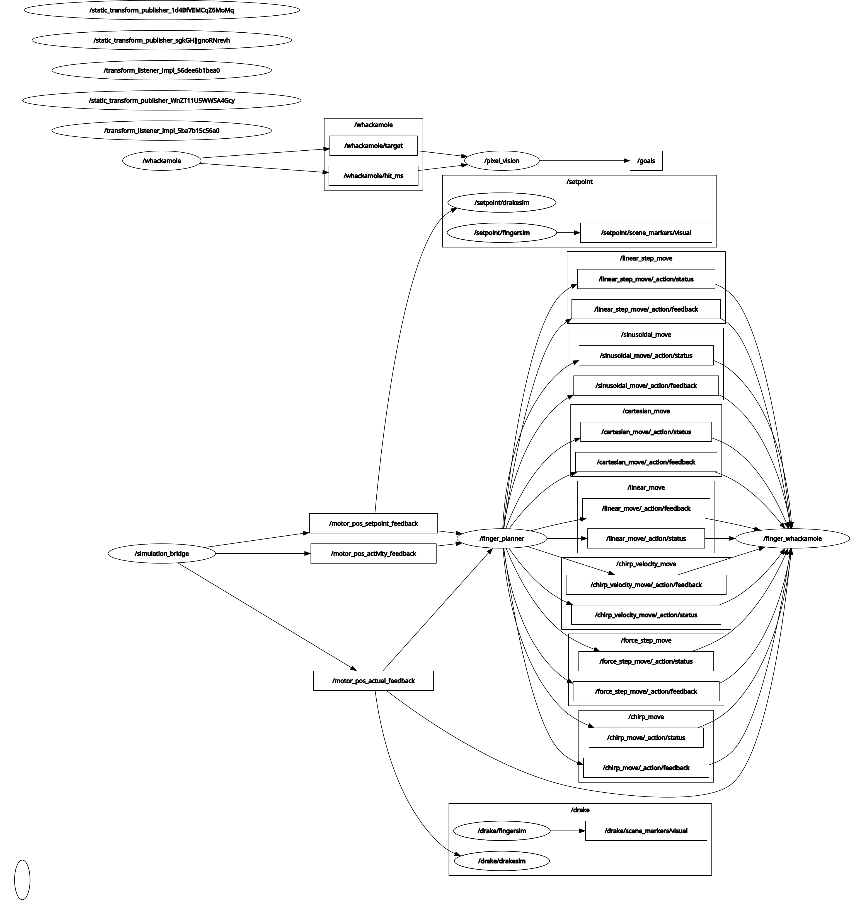

Interactive 3D Model
Browse the CAD model directly in your browser — drag to rotate, scroll to zoom, right-click drag to pan
Interactive model — Full finger assembly
Full Finger CAD
General assembly overview


Figure 1 — Standard assembly view of the Speedster finger
Subassembly CAD


Drake Simulation Diagram
System Diagram
Drake simulation block diagram — scroll horizontally to explore, or click to expand

Figure 5 — Drake simulation system diagram
Electrical Schematic
Wiring Diagram
Full electrical schematic of the Speedster finger system

Figure 6 — Electrical wiring schematic for the Speedster finger system
ROS 2 Node Graph
rqt_graph
Full ROS 2 computation graph — nodes, topics, and action interfaces for the finger system

Figure 7 — ROS 2 node graph: /simulation_bridge feeds motor feedback to /finger_planner, which exposes the motion action servers consumed by /finger_whackamole